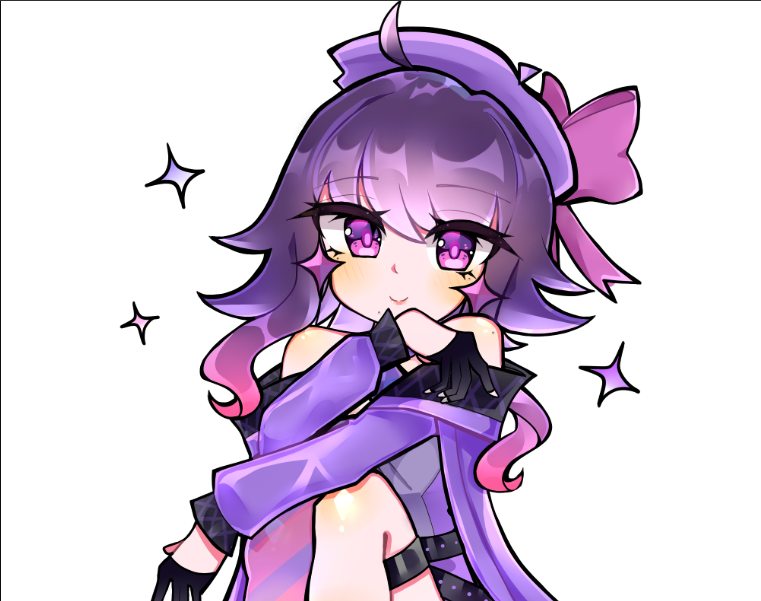

Emmy (prototype 2.0: Star)
Information
Emmy is a automaton being the 7th creation of the [Redacted],Her main task
is to help the others with task they were assigned with. Whether it's
something simple as doing maintenance or fighting any of the various
anomalies scattered the land (if it's necessary), however she is also free
to make her own decisions if she desires.

Emmy relaxing after a long day.
Emmy's Personality
-
She is a bit more on the calmer side compared to the other automatons.
- She is very protective of those she cares about.
-
She tends to be the third voice of reason of the automatons if Iris and
their character aren't around when it comes to decision-making.
-
She tends to prefer more peaceful environments but doesn't mind a
occasional conflict chaos.
Emmy's Friends (Note: This section will have her actual friend's later so
for now placeholder will be used)